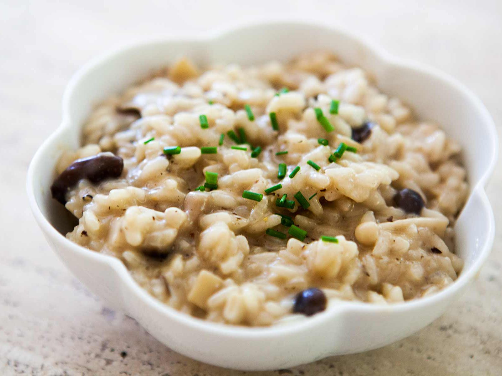

Mushroom Risotto

Description
This is a Mushroom Risotto recipe page.
The recipe steps are sourced from this article written by Myleen Sagrado Sjödin.
Ingredients
- 6 cups chicken broth, divided
- 3 tablespoons olive oil, divided
- 1 pound portobello mushrooms, thinly sliced
- 1 pound white mushrooms, thinly sliced
- 2 shallots, diced
- 1 ½ cups Arborio rice
- ½ cup dry white wine
- sea salt to taste
- freshly ground black pepper to taste
- 3 tablespoons finely chopped chives
- 4 tablespoons butter
- ⅓ cup freshly grated Parmesan cheese
Steps
- In a saucepan, warm the broth over low heat.
- Warm 2 tablespoons olive oil in a large saucepan over medium-high heat. Stir in the mushrooms, and cook until soft, about 3 minutes. Remove mushrooms and their liquid, and set aside.
- Add 1 tablespoon olive oil to skillet, and stir in the shallots. Cook 1 minute. Add rice, stirring to coat with oil, about 2 minutes. When the rice has taken on a pale, golden color, pour in wine, stirring constantly until the wine is fully absorbed. Add 1/2 cup broth to the rice, and stir until the broth is absorbed. Continue adding broth 1/2 cup at a time, stirring continuously, until the liquid is absorbed and the rice is al dente, about 15 to 20 minutes.
- Remove from heat, and stir in mushrooms with their liquid, butter, chives, and parmesan. Season with salt and pepper to taste.